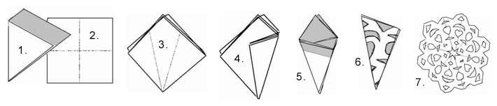
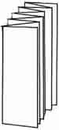
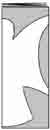

Something You Can Do
Aren’t snowflakes beautiful? In the wintertime when it gets dark in the evenings you can put up paper snowflakes on the windows. God made every snowflake different, but each one has six points. Isn’t that amazing? This is a pattern that will make a six-pointed snowflake if you follow the directions carefully. There is also a pattern for an angel string, which you can tape on your window or shelf edge.
Make a Paper Snowflake
- Each snowflake is made out of a white piece of square paper. To make your paper square, fold the edges to meet like this and cut off the gray part:
- Fold on the dotted lines.
- Now turn your little paper square like this with the cut edges of the paper on top:
- Fold in thirds on the dotted lines to make a cone shape. This is hard, so you might need help.
- Next cut off the gray part in a slant (picture below). If you don’t cut off enough, some of the snowflake points will be shorter than others.
- This is the time to cut the pattern. Always leave some paper on each side when you make cuts. If you leave only thin strips of paper, your snowflake will be more lacey. Have fun, and remember, each snowflake is different.
- Finally, open your snowflake and tape it up! If it is in two pieces you need to follow step 3 more carefully.

Make an Angel Chain


- For a long chain you will need a long piece of paper, like the connected kind of computer paper. To begin, carefully fold it back and forth, keeping the edges straight, like an accordian. Small folds will make small angels and big folds will make big ones.
- Next copy this pattern (or something like it) on your folded paper stack. The wings need to touch the side of the paper so that the angels will stay together.
- Open the chain up and see what it looks like. Can you think of some Bible stories about angels?